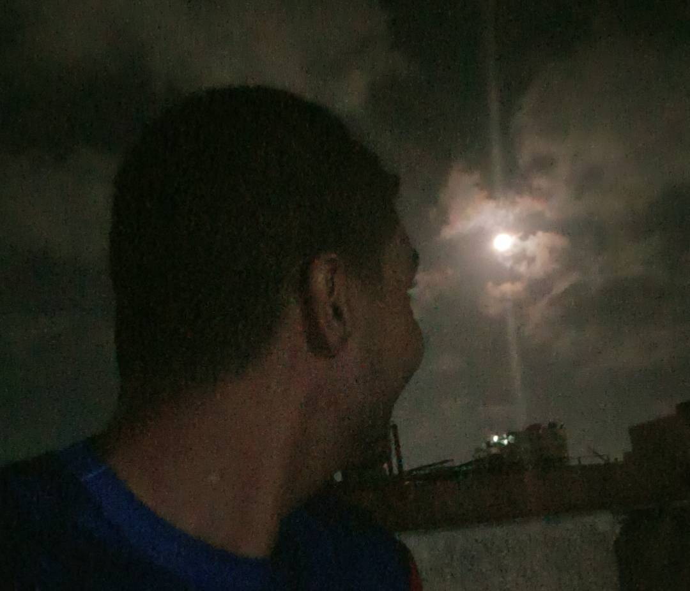
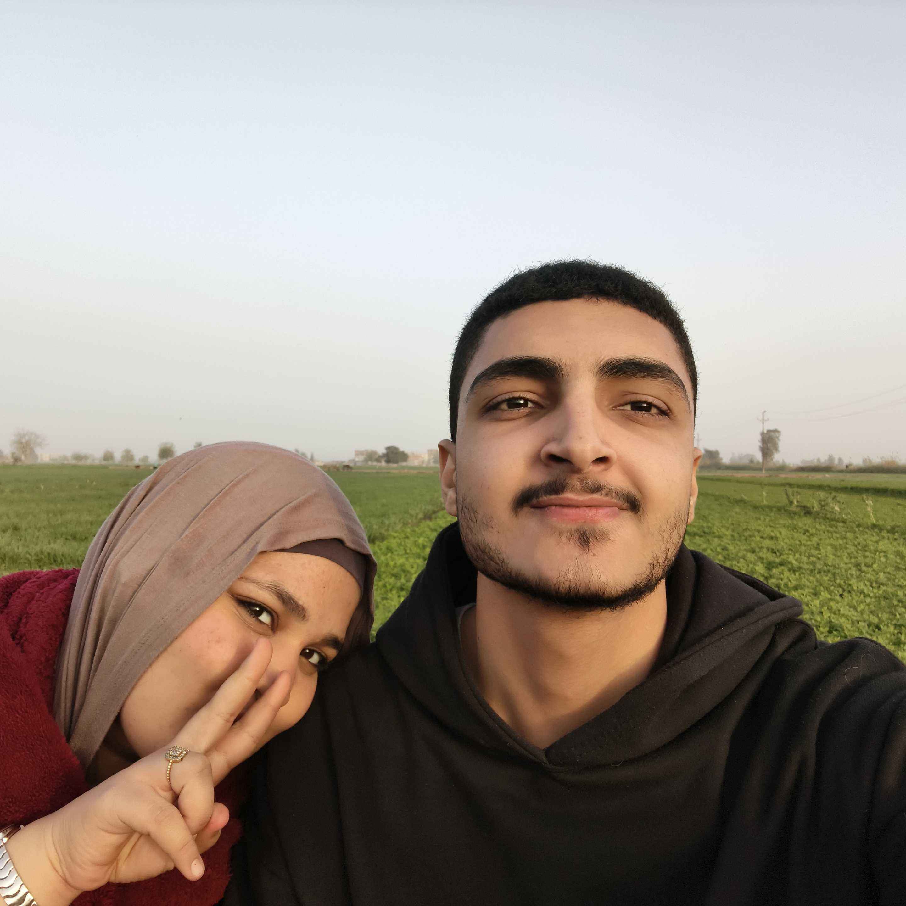
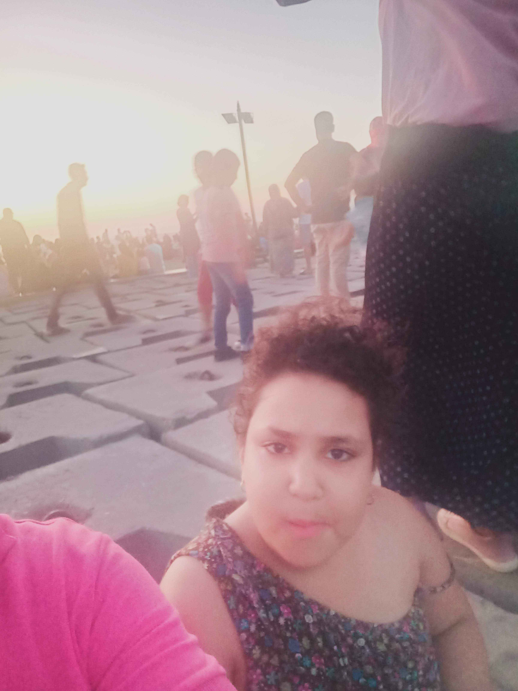
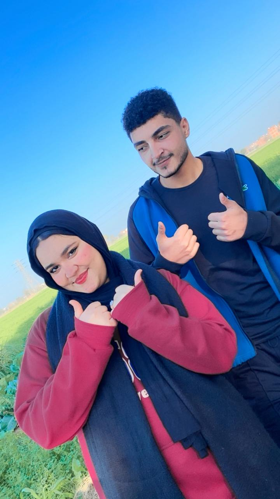
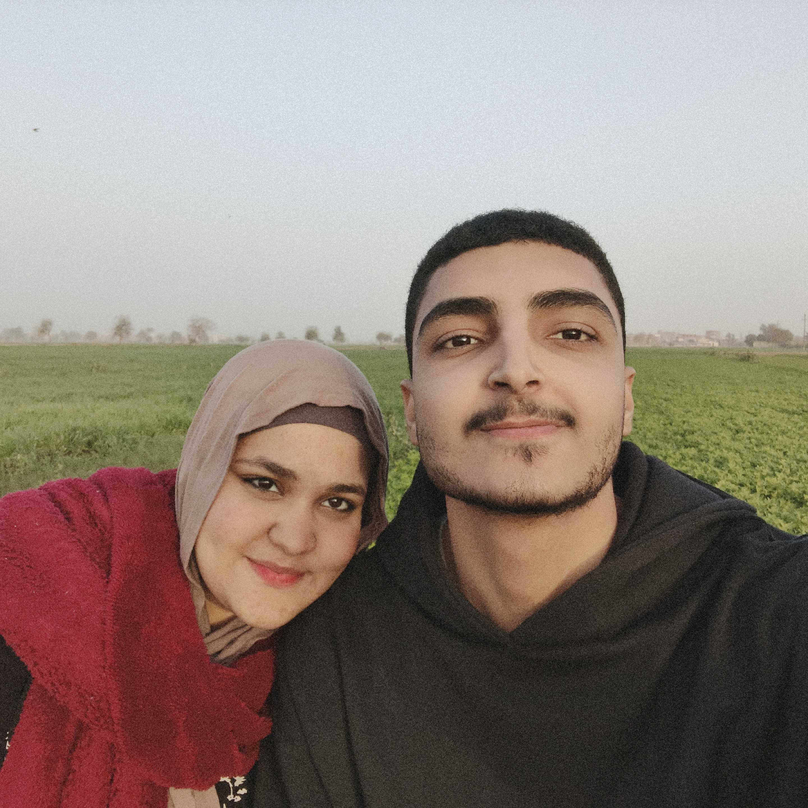
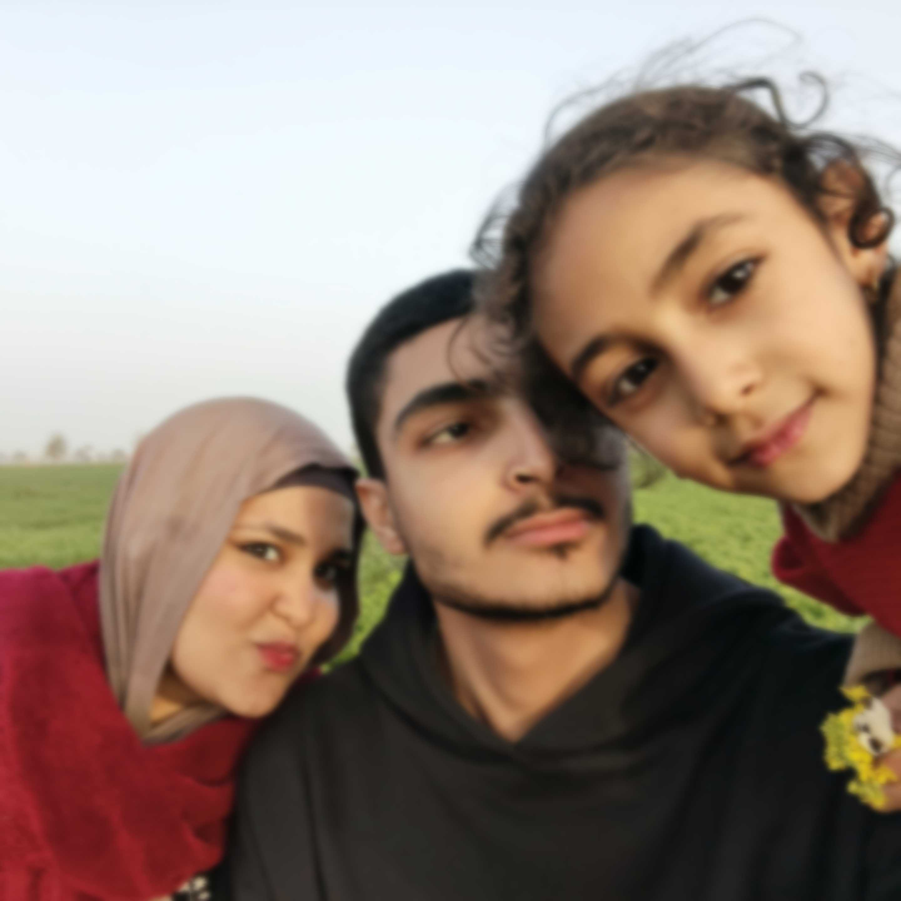

Our Eternity







A universe kept in my heart
"She walks in beauty, like the night
Of cloudless climes and starry skies;
And all that’s best of dark and bright
Meet in her aspect and her eyes;"
ربنا يجبر بخاطرك علشان واخده بايدي
علشان وياكي لقيت نفسي
ولقيت عيدي
ويعلي في شانك وحنانك واذا قلو الناس انتي تزيدي
ياشعاع النور
يا غطايا من الايام البور
يا حموله ومرضيه بشيلتك
تفضلي دايما كل صحابي
ويقدرني اني افضل عيلتك
I wish I could show you,
when you are lonely or in darkness,
the astonishing light
of your own being.
بقول لو حتى فات العمر وصرت مُسِّن في السبعين
تساعني نظرتين عواجيز
ويكفوا ضحكتين شايبين
ونسمع حاجة من فيروز
تاخدنا ليوم ماشوفتيني
وحشتيني
حلف القمر يا قمر يا قمر
يمين وقالي يا حلو ساعة ما شافك
في الحسن لا بعدك ولا قبلك يا روحي
يا روحي كملت أوصافك
ك--م جورج وسوف
"لو في يوم من الأيام مابقاش فيه بينا كلام، ومسمعتيش صوتي تاني.. افتكري حاجة واحدة بس،
إني حبيتك بكل اللي فيا،
بكل طاقتي،
بكل ضعفي وقوتي.
خليتك أولوية في حياتي بطريقة عمري ما تخيلت إني أقدر أعملها علشان حد.
كان قدامي طرق كتير وناس أكتر،
بس برضو اخترتك إنتي..
فضلت، مسبتكيش،
ولو كانت النهاية الحتمية إني أمشي،
بتمنى غيابي يريحك أكتر من وجودي.
حبي يمكن مكنش كامل، بس كان صادق،
كان حقيقي..
وحتى وأنا بسيب، جزء مني لسه بيتمنى تلاقي السعادة دايما ف اي مكان هتكوني فيه
ولو ف يوم افتكرتيني...
افتكري الدفا ، والضحك، واللحظات الهادية اللي مكناش محتاجين حتى فيها الكلام..
واعرفي إن حتى في اللحظات اللي كنت ساكت فيها،
كنت دايما بحبك..
بس يمكن مكنتش عارف أعبر كويس."